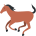

Ресми вайбометр степи · v1.0
Казахский Вайбометр
Нажми — и степь ответит. Ответ случайный, как погода в Астане.

3
үш
Опрашиваем аташек…
Сегодня казахский вайб на
0
коней из 10 юрт

Ресми вайбометр степи · v1.0
Нажми — и степь ответит. Ответ случайный, как погода в Астане.
үш
Опрашиваем аташек…
Сегодня казахский вайб на
коней из 10 юрт